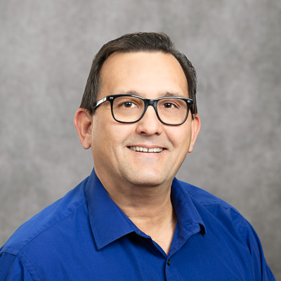

Ildar Khuziakhmetov
Web Developer

Summary
Skilled, dedicated, and hard-working professional focused on expanding and utilizing IT - related knowledge and skills within
the industry. Strong academic background in the IT field and able to quickly learn and master new technology. Proficient in
a range of computer systems, languages, and tools. Flexible and adaptable with strengths in leadership, multitasking, time
management, efficiency, and accuracy in task completion and team collaboration.
Education
Associate of Applied Science degree in Computer Information Technology with a concentration in System Administration
and Management, GPA 3.94
- Pellissippi State Community College (Knoxville, TN) | Fall 2018 – Spring 2021
Associate of Applied Science degree in Computer Information Technology with a concentration in Networking
- Pellissippi State Community College (Knoxville, TN) | Fall 2018 – Spring 2021
Artists Diploma
- Duquesne University (Pittsburgh, PA) | 1998 – 2000
Master of Music in Cello Performance
- Rimsky-Korsakov State Conservatory (St. Petersburg, Russia) | 1990 – 1996
Master of Arts in Music Education
- Rimsky-Korsakov State Conservatory (St. Petersburg, Russia) | 1990 – 1996
Undergraduate Studies
- V. Uspensky Music School (Tashkent, Uzbekistan) | 1979 – 1990
Work Experience
Covenant Health, Knoxville, TN May 2021 - present
IT Support Analyst
Consult with client area management and staff regarding PC and LAN systems and equipment problems or malfunctions
and recommend solutions by assisting in the evaluation of business needs, recommending vendor packages, implementing
required software, and installing new hardware and maintaining existing hardware.
- Provided Tier 2/Tier 3 level end user PC support.
- Coordinated configuration/installation and general troubleshooting of PC hardware and software.
- Implemented hardware and software testing.
- Directed end user training and documentation.
- Provided remote PC support and troubleshooting.
- Provided Assistance and Direction to fellow IT Groups.
- Provided mentoring to junior staff.
- Provided status reports, problem summaries, and project status as required.
- Worked on moderately complex applications.
- Conferred with end users to determine types of hardware and software required.
- Conferred with end users to determine types of hardware and software required.
Lead Cellist
Mastering and performing musical pieces while ensuring cohesion of the section through clear and concise communication,
supervising section team members, providing direction and instruction to groups and individuals, inspiring, coaching, and
mentoring colleagues and demonstrating initiative, organization, punctuality, extensive preparation and unwavering dedication
to the goals and success of the orchestra.
- Knoxville Symphony Orchestra | 2000-2021
- Pittsburgh Opera Center at Duquesne University, Principal | 1998-2000
- St. Petersburg City Hall State Symphony Orchestra, Principal | 1997-1998
- Rimsky-Korsakov State Opera and Ballet Theatre Orchestra, Principal | 1995-1996
- St. Petersburg “Mozarteum” Chamber Orchestra, Principal | 1993-1998
- Cellist of the “Amadeus” String Quartet | 1993-1996
Skills
- Programming: HTML, CSS, JavaScript, Python
- Virtualization
- Windows Server Administration
- Network Security
- Microsoft Office Suite
- Microsoft Active Directory
- Networking
- Unix/Linux System Administration
Awards/Certifications
- Certificate of Completion in NFT 101: Introduction to NFTs | 2023
- Certificate of Completion in Web3 Materclass: Blockchain, DApps, DAO + More | 2022
- CompTIA A+ Certification (CompTIA) | 2022
- Certificate of Completion in Introduction to Computer Science and Programming Using Python (MIT) | 2021
- Certificate in Computer Technical Support (Brainbench) | 2021
- CompTIA IT Fundamentals (ITF+) Certification (CompTIA) | 2021
- Recipient of the Award of Excellence, South College | 2007
- Recipient of the Outstanding Teacher Award, Tennessee Governor’s School for the Arts | 2005
- Microsoft Certified Azure Fundamentals | 2019
Other
Contact Me